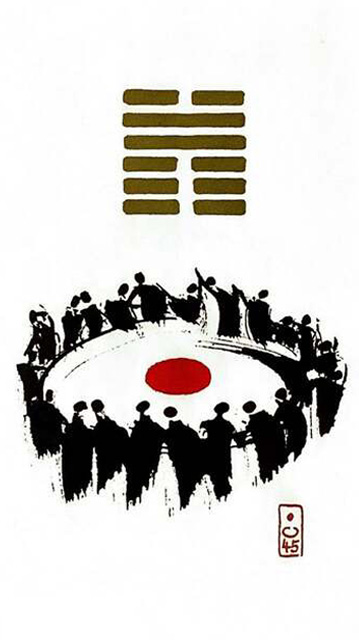

택지취(췌)(모을 취/취합하다 )
평괘 20
강강술래, 천하동인 동생 괘
택 연못(즐거움) / 지 땅(부드러움)즐거움과 부드러움이 있으면 사람들이 모여든다화기애애한 즐거운 파티 많은 사람들이 모여 있는 상황을 표현한 그림
함께 모임.집단결속력.뭉치다.모이다.수렴.통합.집합.힘을 합치다.동호회.정당.팬클럽.협력자
연애운
주변에 사람은 많으나 연애상대는 부족.친구가 더 중요
사업운
일복 많음.손님 고객 많음.매일이 회식.동업
속마음
썸이쪽저쪽 다 신경 쓰는 마음.친구처럼 대하는 마음
1년 이상긍정적이고 안정적인 마음
이별 후긍정적으로 좋게좋게 재회 하고 싶은 마음
솔로연애운
사람 많은 곳에서 생길 확률 있다. 친구처럼 지내다가 발전 가능성
건강운
식중독.위.장질환.과로 조심